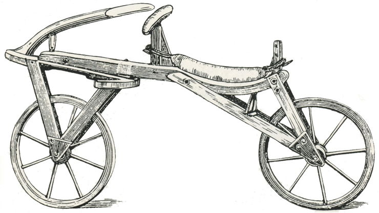

Bikes
The history of the bicycle starts in 1817 with a German inventor called Karl von Drais. Called the ‘draisienne’,
it was the first horseless, two-wheeled vehicle that was propelled by the person riding it.
The draisenne, also called the Dandy Charger and a hobby horse, didn’t use pedals like bicycles today do, instead the person using it pushed the vehicle along using their feet.
